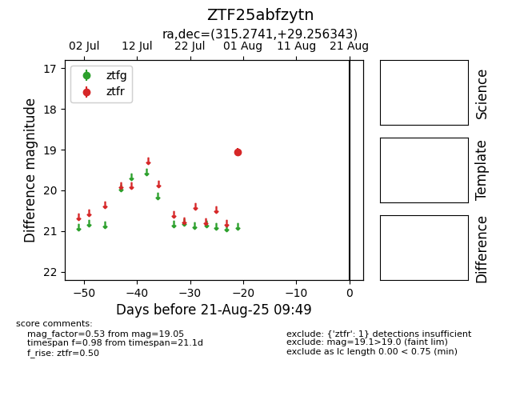

Target ZTF25abfzytn at 2025-08-21 09:49, see:
FINK: fink-portal.org/ZTF25abfzytn
Lasair: lasair-ztf.lsst.ac.uk/objects/ZTF25abfzytn
ALeRCE: alerce.online/object/ZTF25abfzytn
alt names
ZTF25abfzytn (ztf,alerce)
coordinates:
equatorial (ra, dec) = (315.2741,+29.25634)
galactic (l, b) = (74.2830,-11.14951)
photometry
last ztfr=19.05
1 ztfr detections
